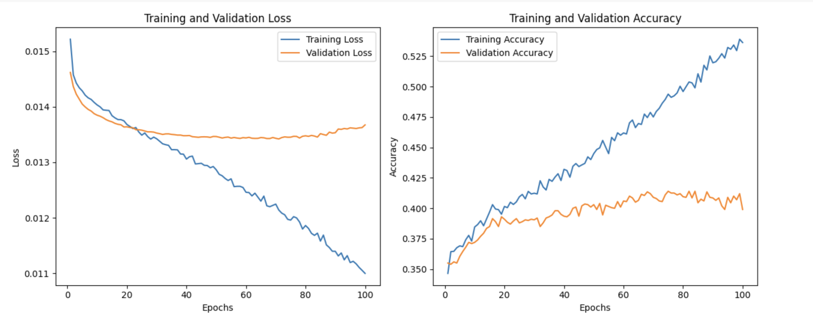
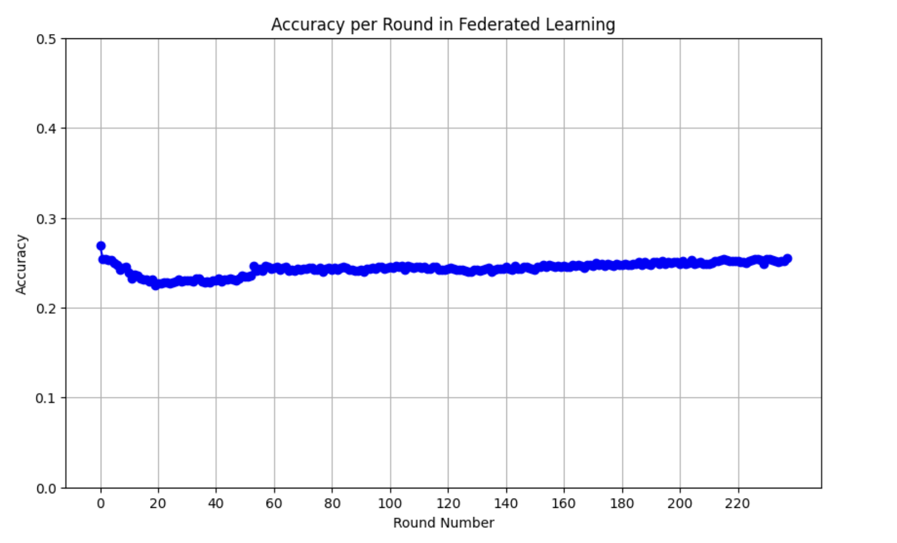

An Analysis of [Communication-Efficient Learning of Deep Networks from Decentralized Data]
Motivation
Federated learning has gained widespread use in healthcare sectors where data sharing is often challenging due to concerns over user privacy and data ownership. Without adequate techniques to utilize these "isolated" data, we typically encounter data silos. Hospitals are eager to leverage their data but lack the knowledge to do so effectively. Introduced by Google in 2016, federated learning was designed to tackle this issue by adhering to the core principle that only model gradients or weights, not raw data, are exchanged among servers.
Yet, in recent years, we have not seen this technology adopted on a large scale, despite increasing societal concern for data privacy from both regulatory agencies and the public. One possible reason is that tech companies may lack the incentive to allow users to keep their data on local devices, as this data is a lucrative resource for them. However, we are interested in investigating, from a technical standpoint, what factors are impeding the broader adoption of this technology.

Introduction
Federated Learning is a distributed learning technique that aggregates locally-computed updates to learn a shared model, doing so without accessing local raw data, thus serving as a popular technique for preserving privacy. Instead of all training happens on a central server, it's distributed into multiple 'client' nodes. Distributed learning is nothing new. Exploration in distributed training, specifically in iteratively averaging locally trained models, has been extensively studied and practically applied to the cluster/data setting.
Then, how is Federated Learning different? Unlike conventional distributed training, which often overlooks privacy concerns, Federated Learning also distinguishes itself through its unique environmental considerations. Consider a data cluster center, where we assume balanced (each client node shares a similar size dataset) and IID (independent and identically distributed) data input, along with fast networks of high stability and synchronization. In the federated setting, we usually deal with from dozens to millions of local datasets, characterized by unbalanced, non-IID properties and bandwidth-constrained networks. This shift in setting results in a transition of focus: from computational costs in cluster settings to communication costs in federated environments.The Federated Averaging algorithm, introduced in this paper, serves to leverage additional local computation in order to reduce the number of communication rounds required for model training. It also describes a method of weighted averaging aggregation for local updates, as opposed to simple averaging.
How can we leverage more local computation to address the issue of high communication costs? What is weighted average aggregation in the federated learning setting, and what are its benefits compared to simple averaging? With these questions in mind, let's dive into the paper!
Literature Review
The paper Communication-Efficient Learning of Deep Networks from Decentralized Data is seminal in introducing federated learning. It outlines the fundamental architecture of an FL system and an optimization algorithm, FedAvg (Federated Averaging), for updating the global model on a central server based on local gradients or weights updates from client servers. Although this work primarily focuses on optimization properties within an FL setting and offers limited discussion on practical issues that might arise in real-world applications, we believe it provides an excellent foundation for understanding the technology and setting the stage for future research or practical applications.
The FedAvg Algorithm - Overview
The predominant optimization algorithm in use is Stochastic Gradient Descent (SGD), which adapts well to federated optimization (FedSGD) by processing a single batch gradient per communication round. Although this method is computationally frugal, it necessitates a substantial number of training rounds to develop robust models. For example, advanced techniques like batch normalization required 50,000 iterations for the MNIST dataset with small minibatches. Given that communication is a costly resource in federated learning, reducing the number of communication rounds is imperative. This necessity distinguishes FedAvg from FedSGD: FedAvg significantly curtails communication demand by aggregating multiple local updates before transmitting them, whereas FedSGD communicates after every batch, increasing the communication overhead. This efficiency in reducing communication rounds makes FedAvg particularly advantageous in federated settings.
The key steps of FedAvg are as follows:
$$ Loss Function: f(w) = \sum_{k=1}^{K} \frac{n_k}{n} F_k(w) \quad \text{where} \quad F_k(w) = \frac{1}{n_k} \sum_{i \in P_k} f_i(w). $$
- Initialization: A global model is initialized on a central server.
- Local Training: This global model is sent to a subset of participating devices (clients). Each client trains the model on their local data.
- Model Updating: After local training, each client sends their model updates (i.e., the weights of the trained model) back to the server. Notably, the actual data remains on the client, ensuring privacy.
- Aggregation: The server aggregates these updates, typically by weighted averaging the weights as the loss function shows, to update the global model.
- Iteration: Steps 2-4 are repeated for several rounds until the model converges or meets certain performance criteria.

Key Variables:
-
C: The fraction of clients participating in each training round. K: The total number of clients.-
B: The local minibatch size for client updates. -
E: The number of local epochs for client updates. η: The learning rate for gradient descent.
More specifically,
Server Executes:
-
The server initializes the global model with parameters
w_0. -
For each round
t:-
The server selects a subset
S_tofmclients randomly from the totalKclients.Cis a fraction of the total number of clients. -
Each selected client
kperforms aClientUpdateon the current global modelw_t. -
The server computes
m_t, the sum of the data pointsn_kfrom all selected clients. -
The server updates the global model to
w_{t+1}using a weighted sum of the client updates, with weights proportional to their data points.
-
The server selects a subset
ClientUpdate:
(Run on client k)
-
The client splits its local data
P_kinto batches of sizeB. -
For each local epoch
ifrom 1 toE:-
The client processes each batch
band updates the local model parameterswusing gradient descent. -
After
Eepochs, the client returns the updated parameterswto the server.
-
The client processes each batch
Previous Related Works
- McDonald et al. (2010): Related to FedAvg by introducing model averaging in distributed settings, but did not account for federated learning's characteristic unbalanced and non-IID data.
- Povey et al. (2015): Utilized parameter averaging in deep neural networks for speech recognition, sharing conceptual ground with FedAvg's approach to model updates.
- Shokri and Shmatikov (2015): Proposed a privacy-preserving approach that aligns with FedAvg's goal to reduce communication costs, although it did not address federated learning's unique data challenges.
- Dean et al. (2012): Explored large-scale distributed deep networks training (using SGD, more details below), which is relevant to FedAvg's scale, but FedAvg specifically reduces the updates needed for federated contexts.
Uniqueness of Federated Averaging Algorithm: FedAvg aims to address the training on unbalanced and non-IID data distributions across numerous clients. It is specifically designed to optimize the trade-off between local computation and communication efficiency. This optimization is critical in scenarios where preserving data privacy, managing limited bandwidth, and dealing with uneven data distribution are primary concerns.
Experiements
Having understood the basics of FedAvg, including the meanings of various variables in the algorithm such as B, E, C, and K, as well as its general approach, let us now dive into the experiments conducted by the authors. As previously mentioned, FedAvg aims to address the issue of high communication costs in the traditional FedSGD setting by allowing more local computation before aggregating updates to the central server. Therefore, the authors have conducted extensive empirical studies to test the effectiveness of this approach, especially under conditions of unbalanced and non-IID data input.
MNIST Digit Recognition Task
-
Models:
- MNIST 2NN: Multilayer-perceptron with two hidden layers, 200 units each, ReLu activations (199,210 total parameters).
- CNN Model: Two 5x5 convolution layers (32 and 64 channels), 2x2 max pooling, a fully connected layer with 512 units (ReLu activation), and a softmax output layer (1,663,370 total parameters).
-
Data Partitioning:
- IID Partitioning: Data shuffled and partitioned among 100 clients, each with 600 examples.
- Non-IID Partitioning: Data sorted by digit label, divided into 200 shards of 300 samples each, distributed to 100 clients (2 shards each).
Language Modeling with Shakespeare's Works
- Dataset Construction: Created from "The Complete Works of William Shakespeare", forming a dataset with 1146 clients, each representing a speaking role with at least two lines.
-
Data Distribution:
- Substantially unbalanced, with varying line counts among roles.
- Training/Test Sets: First 80% of lines used for training and last 20% (or at least one line) for testing, following the chronological order of each play.
- IID and Balanced Version: A dataset with balanced and IID data, maintaining 1146 clients.
Before highlighting FedAvg's remarkable efficiency in reducing communication rounds/costs, please note that the following experiments were all conducted in a setting where C=0.1 , based on previous empirical studies. This setting means that only 10% of total clients are involved in these tasks. To increase computation per client per round, we either decreased B (the local minibatch size), increased E (the number of local epochs), or both.
The number of updates per client per round, denoted as \( \boldsymbol{u = \frac{nE}{KB}} \), was increased by varying both E (number of local epochs) and B (local minibatch size).
When calculating the expected number of updates per client per round ('u'), an average is taken based on the total computational resources and the number of client nodes ('K'), where 'K' is the number of clients involved in learning. Each client may have varying amounts of data, making 'u' a measure of the average computational load per client per round. However, this doesn't imply equal data distribution among clients. In practice, the data heterogeneity issue, where data distribution varies significantly among clients, is a crucial consideration in federated learning scenarios.
Below are the summary of experiment results:
Results on IID Partition of MNIST Data:
- For the IID partition, more computation per client led to significant reductions in the number of rounds required to reach target accuracy:
- 35 × speedup for the CNN model.
- 46 × speedup for the 2NN model.
Results on Non-IID Partition of MNIST Data:
- The non-IID data, which was pathologically partitioned, showed smaller yet substantial speedups (2.8 − 3.7 ×).
- This result demonstrated the robustness of the approach, as it was effective even when models were trained on entirely different pairs of digits.
Results on Shakespeare Data (Unbalanced and Non-IID):
- The Shakespeare dataset, representative of real-world applications with unbalanced and non-IID distribution, showed:
- A 95 × speedup in learning on the non-IID and unbalanced data.
- A 13 × speedup for the balanced IID data.
- This suggests that roles with larger local datasets benefited significantly from increased local training. (No rigid proof provided)
A point worth noting here is that although FedAvg is effective in balanced, unbalanced, IID, and non-IID data input settings, the number of communication rounds needed for the non-IID and unbalanced setting still far exceeds the communication cost in balanced and IID settings (except for the language model task). This remains an ongoing challenge in combating data heterogeneity in the federated learning world.
Having observed the remarkable performance of the FedAvg algorithm in reducing communication costs, it's crucial to also assess the model's performance. This is a key indicator of the effectiveness of federated learning. After all, it wouldn't be sensible from various perspectives to prioritize privacy preservation at the expense of model performance.
The figures on the right show the performance of a CNN MNIST model under both IID and Non-IID settings. Models with different hyperparameters might have different rates of convergence, but in the end, they show very promising accuracy results.
Can we over-optimize on the client datasets?
Now that we realize more local training epochs can benefit in reducing communication rounds, the question arises: can we make E (the number of local epochs) as large as possible? The experiment shows that for certain tasks, with a very large number of local epochs, FedAvg can plateau or even diverge.
Based solely on the experiments in the paper, it's difficult to assert definitively that an excessively large E will inevitably result in the model's failure to converge. As observed in the figures above, for an LSTM task, a large E did cause the model to diverge, but this was not the case in a CNN task. We believe that there are more nuances and factors that need to be considered when determining the negative effects of a large E on model training.
Biograpphy
-
Brendan McMahan
- Research Field: Brendan McMahan's research primarily focuses on machine learning, with a specific interest in federated learning, privacy-preserving AI, and distributed algorithms.
- Experience: McMahan is known for his work at Google, where he has been a key figure in the development of federated learning technologies. His contributions have been instrumental in advancing machine learning techniques that are both privacy-conscious and efficient for use on decentralized data.
-
Eider Moore
- Research Field: Eider Moore's research interests are less publicly documented, but their contribution to this paper suggests a focus on distributed machine learning and privacy-preserving technologies.
-
Daniel Ramage
- Research Field: Daniel Ramage specializes in natural language processing (NLP) and machine learning, with a particular interest in applying these technologies in practical, user-centered contexts.
- Experience: Ramage has a strong background in both academia and industry. He has worked on various NLP and machine learning projects, contributing to the development of technologies that bridge the gap between theoretical research and real-world applications.
-
Seth Hampson
- Research Field: Seth Hampson's specific research interests are not widely publicized. However, his involvement in this paper indicates a focus on distributed systems and machine learning.
-
Blaise Agüera y Arcas
- Research Field: Blaise Agüera y Arcas works primarily in machine learning, with a strong interest in neural networks, computational neuroscience, and human-computer interaction.
- Experience: Agüera y Arcas is known for his work at Google, particularly in AI and machine learning. He has played a significant role in developing innovative technologies and has been a prominent speaker on topics related to AI and the intersection of technology and society.
Social Impact
The social implications of this research are significant

- Enhanced Privacy Protection: Enhances user privacy by training models on users' devices without sharing personal data with a central server.
- Improved Accessibility of Machine Learning: Democratizes access to machine learning, allowing model training on devices with limited computational resources.
- Advancement in Healthcare: Facilitates the development of predictive models in healthcare without compromising patient confidentiality.
- Impact on Consumer Services: Improves consumer services like recommendation systems and virtual assistants by providing a more tailored user experience.
- Challenges in Data Equity: Raises questions about data equity due to potential bias if the data on local devices isn't representative of the broader population.
- Ethical and Regulatory Considerations: Introduces new ethical considerations and the need for regulations ensuring responsible design and use of federated learning systems.
Industry Applications
Following are some examples of real-world implementation of federated learning applications.
- UCSF COVID-19 Modeling: Used in healthcare at UCSF to predict oxygen levels in COVID-19 patients using decentralized data.
- Glioblastoma Study: Global effort involving 6314 glioblastoma patients across 71 sites for detecting cancer sub-compartment boundaries.
- WeBank: Applied in finance by WeBank for credit rating, combining their data with encrypted invoice data for loan default prediction.
- Siemens: Implemented in manufacturing for predictive maintenance and quality control, analyzing data from machinery across multiple plants.
- Enershare: Used in the energy sector for optimizing renewable energy systems, focusing on energy forecasting and grid management.
Follow-on Research
Several potential issues have been identified that can hinder the effective implementation of federated learning, and some of these have now become popular open research areas.
-
Non-IID Data Distribution: Data in federated
learning is typically not identically and independently
distributed (non-IID) across the network. This variability can
negatively impact the learning process and the performance of the
global model.
Strategies for Handling Non-IID Data
1. Algorithmic Adaptation:
- Modify existing algorithms or develop new ones.
- Adjust hyperparameters to manage diverse datasets.
2. Data Augmentation:
- Create a small, globally shared dataset for uniformity.
- Utilize public data sources or non-sensitive client data.
3. Objective Function Optimization:
- Re-evaluate objective functions considering client diversity.
- Introduce limitations and fairness criteria in data contribution.
4. Single vs. Multi-Model Debate:
- Single global model: Uniformity for all clients.
- Multi-model approach: Customized models for each client.
- Turns non-IID challenge into an advantage.
5. Multi-Model for Independence Violations:
- Address varying client availability through multiple models.
- Example: Different models for clients based on timezone/longitude (Eichner et al.).
- Unbalanced Data: The amount of data across devices can be highly unbalanced, leading to skewed model updates and potentially reducing the overall effectiveness of the model.
- Limited Communication Bandwidth: Federated learning is challenged by limited bandwidth for communication between the devices and the central server, which can hinder the process, especially when dealing with large models or many devices.
- Devices Heterogeneity: There is significant heterogeneity in the computational capabilities, storage, and network connectivity of the devices in federated learning, causing challenges in synchronizing and executing the learning process efficiently.
Peer-Review
Gabriel's review:
This paper presents a clear problem and proposes a clear and straight forward solution. As is with most seminal papers, it lacks real-world validation and does not address real-world obstacles that might occur.
Strengths:
- Innovative Algorithm: Introduces the FederatedAveraging algorithm, a groundbreaking approach for training models with decentralized data.
- Comprehensive Analysis: Provides a thorough analysis of the algorithm's performance, particularly in scenarios with non-IID (non-identically distributed) and unbalanced data.
- Significant Communication Efficiency: Demonstrates substantial reductions in the amount of data that needs to be communicated, which is crucial for federated learning.
Weaknesses:
- Experimental Limitations: The experiments primarily focus on a limited set of models and datasets, which may not fully represent the diversity of real-world applications.
- Potential Scalability Concerns: While the algorithm is effective in the scenarios tested, its scalability and effectiveness in larger, more complex environments are not extensively explored.
- Omitted Aspects of Federated Learning: The paper focuses predominantly on communication efficiency, potentially overlooking other critical aspects like privacy, security, and data heterogeneity.
Zhongwei's review:
Overall Impression: The paper contributes significantly to federated learning, particularly in its practical application in reducing communication cost. However, its impact is somewhat limited by the lack of comprehensive theoretical analysis and an oversimplified approach to model complexity. Future research could benefit from a more rigorous theoretical foundation and comparative studies between traditional and federated learning frameworks.
Pros:
- Comprehensive Empirical Evaluation: Thorough empirical evaluation of the proposed algorithm, offering valuable insights.
- Democratizing Distributed Learning: Extends application from data clusters to end-user devices, addressing unbalanced and non-IID data issues.
- Feasibility in Simple Lab Setting: Demonstrates the technique's feasibility in a controlled environment, establishing a foundation for further research.
Cons:
- Lack of Rigid Theoretical Analysis: Over-reliance on conjecture rather than rigorous analytical backing.
- Oversimplified Model Complexity: Utilizes simple models that do not adequately reflect real-world application complexity.
- Unclear Aggregation Methodology: Lacks clarity in discussing the weighted averaging aggregation, leading to confusion about the methods used in experiments.
- Absence of Comparative Analysis: Misses the opportunity to compare traditional ML settings with federated learning settings.
- Distraction with Model Initialization: Misplaced discussion on model initialization, especially given the context of a shared model in federated settings.
Code Implementation
The primary objective of this code implementation is to demonstrate the efficacy of the FedAvg algorithm in reducing communication costs within a federated learning framework. This process comprises three key components:
Please Explore our Federated Averaging Experiment Colab Notebook
- Training a Sentiment Analysis Model: Using vanilla stochastic gradient descent (SGD) optimization, applied outside a federated learning context. The purpose of this step is to establish a baseline model performance for subsequent experiments in FL settings.
- Training with FedSGD Algorithm: Utilizing the FedSGD algorithm (setting E = 1, B = size of local data), which involves performing a single batch gradient calculation per communication round. In this case, as the minibatch size matches the local dataset size, one batch is equivalent to one epoch in the FedSGD framework.
- Training with FedAvg Algorithm: Implementing the FedAvg algorithm (with E=5 and B=50), where more computation is executed locally. This represents a significant advancement of the algorithm, especially in addressing the high communication requirements typical of algorithms like FedSGD.
Note that due to resource constraints, only the vanilla SGD and FedAvg algorithm experiment has been completed, which required hours of training. As the FedSGD algorithm is expected to take significantly more time due to its high communication costs in the federated learning setting—possibly more than an order of magnitude compared to FedAvg—its experiment has been delayed.
Dataset preparation
This study utilizes the YelpReview Sentiment Analysis dataset, which contains 10,000 Yelp reviews, each with review content and rating stars. The primary task is to predict the rating stars (ranging from 1 to 5) based on the review content.
The datasets for the three models mentioned are prepared as follows, with each dataset first undergoing tokenization and padding before splitting:
- Vanilla SGD: The entire dataset is divided into 80% for training and 20% for testing with minibatch size of 100.
- FedSGD: The dataset is split into 10 shards, converted into 10 dataloaders with a batch size equal to the number of data points per shard, resulting in one batch per dataloader.
- FedAvg: Similar to FedSGD, the dataset is divided into 10 shards, but with a minibatch size of 50.
For both FedSGD and FedAvg models, to emulate non-IID and unbalanced data conditions, the raw dataset is sorted into classes before being divided into shards, with each shard containing varying numbers of data examples.
Results
The Vanilla SGD model aims to establish a baseline performance for this sentiment analysis task, because the three models share a same network architecture. After training for 100 epochs, we clearly observe overfitting, and the val accuracy of around 40% is not considered good. However, this will serve as the benchmark for the FedAvg and FedSGD experiments. Specifically, we will examine how many communication rounds it takes for both FedAvg and FedSGD to reach this threshold.
FedAvg Experiment Results
The experimental results presented in the paper were not successfully replicated in our code implementation, primarily due to time and computational constraints. The FedAvg algorithm ran for 4 hours over 238 rounds for each of the 10 clients and achieved an accuracy of 25.458%. The training was intentionally interrupted due to computational limits. We are eager to continue this experiment in the future. Despite these challenges, the notebook still merits examination. Any feedback is welcomed!
Conclusion
The FedAvg algorithm is a cornerstone in federated learning, addressing both the efficiency of model training in decentralized environments and the privacy concerns associated with data sharing. Its design and implementation have opened up new possibilities in the application of machine learning models, especially in scenarios where data privacy and communication efficiency are paramount. However, the FedAvg algorithm is not without its limitations. It still faces challenges from data heterogeneity and system heterogeneity, which are obstacles that impede this technology from being widely adopted in real-world applications. Nevertheless, these limitations also open up new research directions in large-scale machine learning systems.
References
[ii] https://dl.acm.org/doi/10.1145/3414045.3415949.
[iii] https://www.mdpi.com/1424-8220/21/13/4586.
[iv] https://doi.org/10.1038/s41591-021-01506-3.
[v] https://www.mdpi.com/2076-3417/11/23/11191.
[vi] https://mlcommons.org/2023/07/announcing-medperf-open-benchmarking-platform-for-medical-ai/.
[vii] https://arxiv.org/abs/1901.06455.
[viii] https://arxiv.org/abs/2202.01141.
[ix] https://intelligentimaging.ucsf.edu/news/lessons-learned-real-world-federated-learning-experience-covid-19-modeling-ucsf
[x] https://www.nature.com/articles/s41467-022-33407-5
[xi] https://www.digfingroup.com/webank-clustar/
[xii] https://www.siemens.com/global/en/products/automation/topic-areas/artificial-intelligence-in-industry/whitepaper-federated-learning-in-the-industry.html
[xiii] https://enershare.eu/about/
Team Members
Gabriel Cuchacovich
Zhongwei Zhang